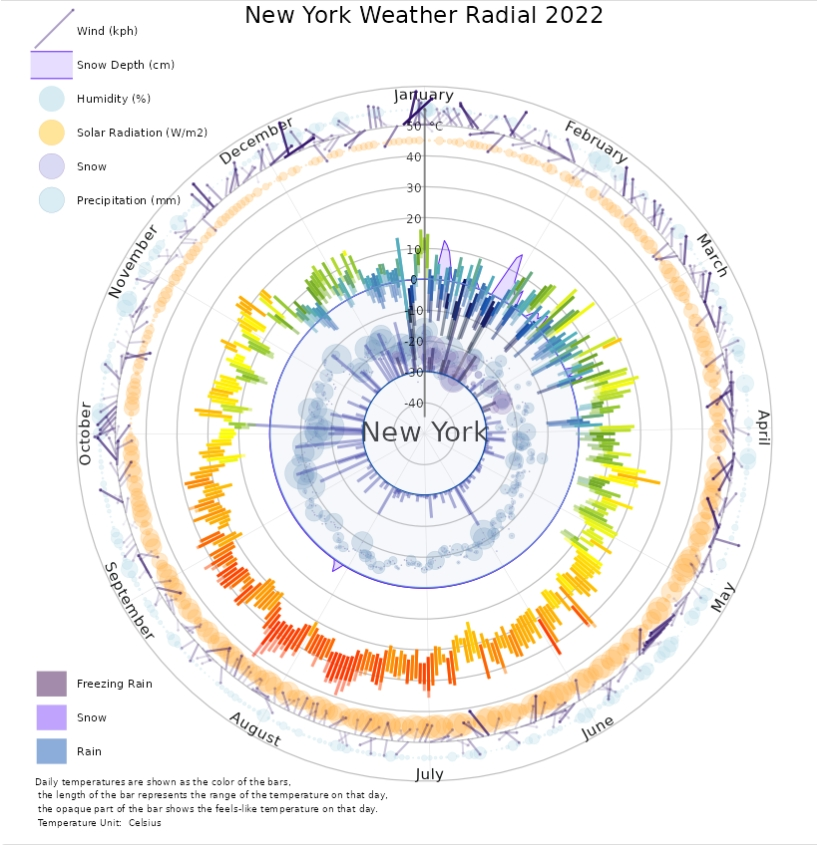
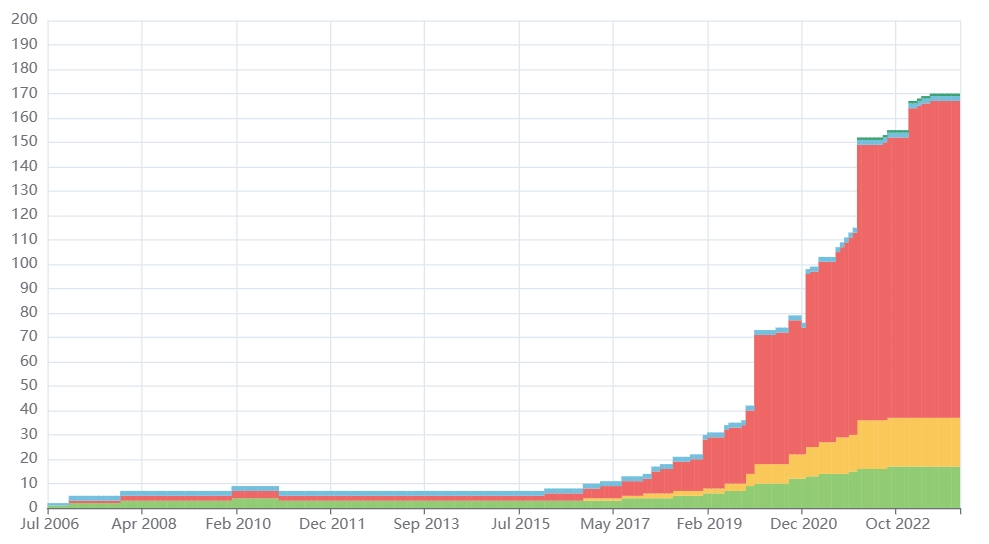
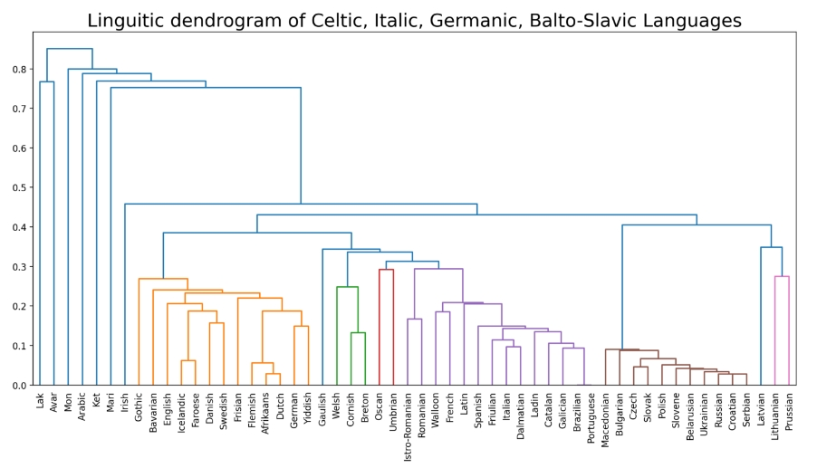
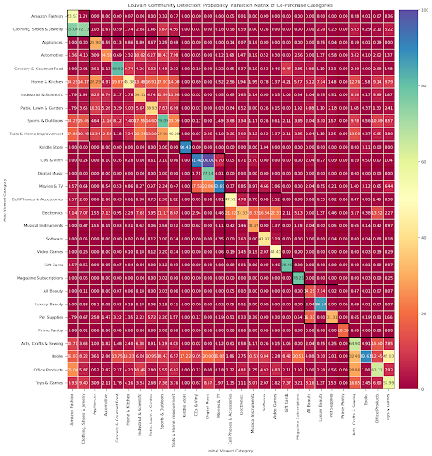

Climatic Chronicles: Exploring Weather and Climate Data Across 430 Cities Globally with Innovative Visualizations and Decision Support
- -Leveraged web crawling tools and API requests to gather weather and climate data of 430 cities from diverse sources.
- -Employed R packages, including ggplot, to craft innovative and informative visualizations of the weather and climate data.
- -Implemented the Analytic Hierarchy Process to recommend cities based on different climate factors.
- -Engineered a web application using Shiny in R, enabling users to search, retrieve, and visualize weather data interactively.

Harvesting Hydrogen Insights: Unveiling Safety Incidents and Fueling Stations through Web Crawling and Streamlit Visualization
- -Compiled data on 220 hydrogen safety incidents and 1789 hydrogen fueling stations using web crawling techniques.
- -Translated text in the data using automated testing tools such as Selenium, accelerated by multithreading methods.
- -Customized data visualization in web application using Streamlit and Pyecharts for future use in industry reports.

Linguistic Family Tree Explorer: Unveiling Language Evolution and Relationships
- -Applied web crawling techniques to gather linguistic data of 2739 languages from Wikipedia and other specific websites.
- -Constructed linguistic trees from the gathered data using Object-Oriented Programming.
- -Employed treelib, clustering methods from SciPy, and Networkx to visualize linguistic data in trees, dendrograms, and graphs.
- -Developed a Streamlit web application to allow users to interact with the data and customize the visualizations.

Unraveling Amazon's E-Commerce Tapestry: A Network Analysis of Consumer Behavior and Market Trends
- -Employed different centralities in Networkx to identify 10 most important categories in the co-appearance network.
- -Verified the scale free nature of the category network by log-log plot on degree distribution.
- -Utilized spectral clustering, Louvain method, etc. to detect 10 clusters of categories in the co-purchase network.
- -Implemented Logistic Regression with graph features to predict whether a viewed product will be purchased and achieved a F1 score of 0.78.

Spatiotemporal Analysis of Housing Prices in NYC: Integrating Predictive Modeling, Fast Fourier Transform, and Random Forest
- -Employed FFT, Filter and IFFT on detrended daily property sale data, denoised and predicted the data, and determined the period of 7 days in the data.
- -Utilized GeoPandas and Matplotlib to visualize the yearly trend in maps and identified areas of interest.
- -Applied H20’s random forest to predict property price based on spatial, temporal, and inherent features of the property and gain the feature importance rank throughout the years.
- -Explored VARIMA models of different parameters to fit the daily property sale number and get the feature importance map.

Exploring the Evolution of Movie Genres, Revenues, and Industry Dynamics Over a Century: A Comprehensive Analysis Using Data Science and Visualization.
- -Utilized MapReduce and SparkSQL in Python to analyze movie metadata, extracting genre, language, budget, revenue, and release dates from over 45,000 records spanning 100 years.
- -Employed Pandas and Matplotlib in Jupyter Notebook to visualize genre trends, revealing a decline in the popularity of drama and romance genres, while action and adventure genres gained prominence.
- -Conducted Spark and SparkSQL analysis to determine the adjusted revenue and profit of movies, factoring in inflation using CPI data, highlighting the impact of changing economic conditions.
- -Identified Gone with the Wind as the most profitable movie in history when adjusted for inflation, emphasizing the historical significance of certain films despite the increasing diversity of entertainment options over the years.

Decoding Depreciation: Analyzing Used Car Trade Patterns in the U.S. for Informed Purchases.
- -Analyzed used car trade data from Kaggle, comprising 420,000 records from April 4th, 2021, to May 5th, 2021, using Python.
- -Explored age and mileage patterns, revealing significant differences in distribution across car conditions; identified Ford's durability based on mileage.
- -Conducted regression analysis, showing a clear negative correlation between car age and price, and car mileage and price; highlighted variations among car models.
- -Utilized PCA regression to model forecasts of secondhand prices, indicating positive relationships between depreciation rates and the original price with respect to age and mileage.

Livability Insights: A Multi-Dataset Analysis of U.S. Cities Using Python, Pandas, and Tableau.
- -Analyzed five datasets, including Zillow Home Value Index for housing costs, A Countrywide Traffic Accident Dataset for traffic accidents, EPA's Walkability Index for walkability, Comparative Climatic Data for weather, and National Center for Health Statistics/USALEEP for life expectancy.
- -Processed and cleaned datasets using Python and Pandas, ensuring consistency at the city level; joined datasets in Tableau to create a comprehensive dashboard.
- -Discovered correlations between factors affecting livability, such as higher housing costs in walkable cities and potential weather-related challenges influencing life expectancy.
- -Implemented user feedback to enhance visualizations, addressing issues with legends, organization, descriptions, and units, aiming for a more user-friendly experience.

Inequalities Unveiled: Exploring the Work and Health Dynamics of People with Disabilities through Interactive Visualizations.
- -Explored income, work, and health dynamics of people with disabilities using Altair visualizations.
- -Uncovered disparities, showcasing lower earnings, part-time work prevalence, and older age across industries.
- -Utilized interactive scatter plots and pie charts for dynamic data exploration.
- -Addressed challenges in finding specific data on medical barriers, emphasizing the importance of good medical care for individuals with disabilities.

Enhancing Movie Search: A Tip-of-the-Tongue Known-Item Retrieval Approach with Abstract Information.
- -Developed a vertical search engine for movie retrieval, focusing on Tip of the Tongue Known-Item Retrieval to assist users with vague memories.
- -Utilized two datasets, one with movie metadata and another with scraped user reviews, to enhance search accuracy.
- -Explored various machine learning models, including BM25, TFIDF, DFIZ, and DirichletLM_df, combined with features like sequential dependence models and review lengths.
- -Addressed challenges such as missing data and observed variations in performance based on dataset characteristics, emphasizing the importance of dataset quality for model effectiveness.

Predicting Stock Prices: A Comparative Analysis of Deep Learning Models.
- -Implemented CNN, RNN, LSTM, and non-deep learning stacking models for stock price prediction.
- -Conducted experiments and analyzed model performance, revealing that RNN outperformed other deep learning models with a Mean Square Error (MSE) of 2.1835e-06.
- -Explored the randomness of stock price change rate, finding that it behaves like a random variable with limited correlation between values.
- -Investigated the impact of model simplification, discovering that a dummy predictor using only the previous day's price achieved the best MSE of 3.120314.